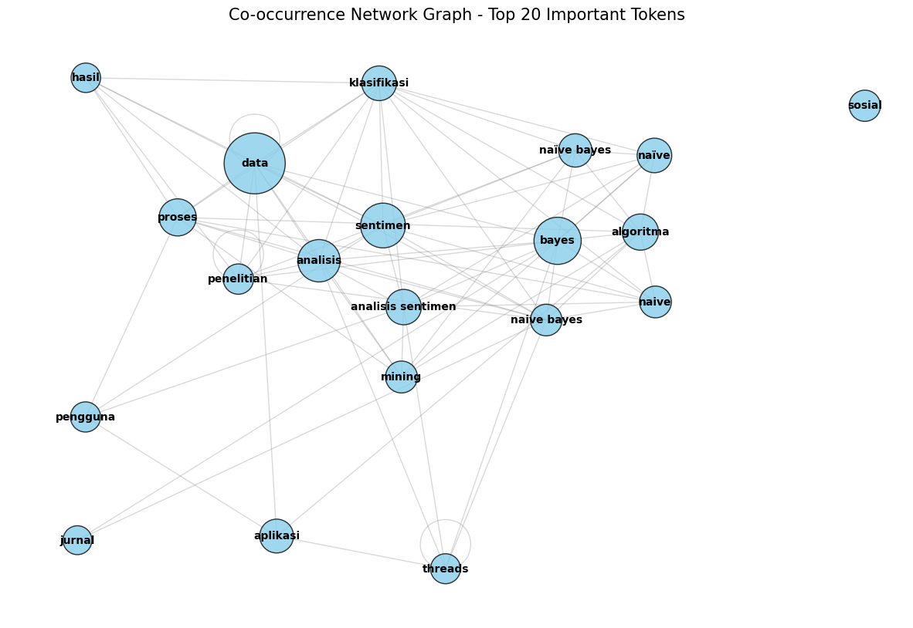

pip install --upgrade pymupdf
Collecting pymupdf
Downloading pymupdf-1.26.7-cp310-abi3-manylinux_2_28_x86_64.whl.metadata (3.4 kB)
Downloading pymupdf-1.26.7-cp310-abi3-manylinux_2_28_x86_64.whl (24.1 MB)
?25l ━━━━━━━━━━━━━━━━━━━━━━━━━━━━━━━━━━━━━━━━ 0.0/24.1 MB ? eta -:--:--
━━━━━━━━━━━━━━━━━━━━━━━━━━━━━━━━━━━━━━━╸ 23.9/24.1 MB 341.4 MB/s eta 0:00:01
━━━━━━━━━━━━━━━━━━━━━━━━━━━━━━━━━━━━━━━╸ 23.9/24.1 MB 341.4 MB/s eta 0:00:01
━━━━━━━━━━━━━━━━━━━━━━━━━━━━━━━━━━━━━━━━ 24.1/24.1 MB 58.1 MB/s 0:00:00
?25h
Installing collected packages: pymupdf
Successfully installed pymupdf-1.26.7
Note: you may need to restart the kernel to use updated packages.
from google.colab import drive
drive.mount('/content/drive')
---------------------------------------------------------------------------
ModuleNotFoundError Traceback (most recent call last)
Cell In[2], line 1
----> 1 from google.colab import drive
2 drive.mount('/content/drive')
ModuleNotFoundError: No module named 'google'
%cd /content/drive/MyDrive/PPW
/content/drive/MyDrive/PPW
import pymupdf
doc = pymupdf.open("main.pdf") # open a document
out = open("output.txt", "wb") # create a text output
for page in doc: # iterate the document pages
text = page.get_text().encode("utf8") # get plain text (is in UTF-8)
out.write(text) # write text of page
out.write(bytes((12,))) # write page delimiter (form feed 0x0C)
out.close()
%%capture
!pip install nltk
import nltk
nltk.download('punkt') # hanya perlu sekali
nltk.download('punkt_tab') # opsional, untuk versi terbaru NLTK (≥3.8.2)
[nltk_data] Downloading package punkt to /root/nltk_data...
[nltk_data] Package punkt is already up-to-date!
[nltk_data] Downloading package punkt_tab to /root/nltk_data...
[nltk_data] Package punkt_tab is already up-to-date!
True
with open('output.txt', 'r', encoding='utf-8') as file:
teks = file.read()
print(teks[:200]) # tampilkan 200 karakter pertama
JITET (Jurnal Informatika dan Teknik Elektro Terapan)
Vol. 13 No. 2, pISSN: 2303-0577 eISSN: 2830-7062 http://dx.doi.org/10.23960/jitet.v13i2.6250
496
ANALISIS SENTIMEN TERHAD
# Install: pip install nltk
import nltk
sentences = nltk.sent_tokenize(teks)
print(sentences)
['JITET (Jurnal Informatika dan Teknik Elektro Terapan) \n \nVol.', '13 No.', '2, pISSN: 2303-0577 eISSN: 2830-7062 http://dx.doi.org/10.23960/jitet.v13i2.6250 \n \n \n 496 \n \nANALISIS SENTIMEN TERHADAP ULASAN PENGGUNA \nAPLIKASI THREADS INSTAGRAM DI PLAYSTORE \nMENGGUNAKAN ALGORITMA NAIVE BAYES \n \nLa Ode Lukmana1*, Dian Ramadani L2, Putri Elisya3 \n1,2 Universitas Halu Oleo; Kampus Bumi Tridharma Anduonohu, Jalan H.E.A.', 'Mokodompit, Kodya \nKendari, Sulawesi Tenggara 93232; Telp.', '0401-3194163 /Fax.', '0401-3190006 \n \n \nReceived: 18 Februari 2025 \nAccepted: 24 Maret 2025 \nPublished: 14 April 2025 \n \nKeywords: \nAnalisis Sentimen, Naive \nBayes, Threads Instagram, \nPlaystore.', 'Corespondent Email: \nlaode.lukmana88@gmail.com \n \n \n \nAbstrak.', 'Analisis sentimen atau bisa disebut juga opinion mining merupakan \nproses memahami, mengekstrak dan mengolah data tekstual secara otomatis \nuntuk mendapatkan informasi sentimen yang terkandung dalam suatu kalimat \nopini terhadap sebuah masalah atau objek oleh seseorang, apakah cenderung \nberopini negatif atau positif.', 'Penelitian ini bertujuan untuk mengklasifikasi \nReview Pengguna Aplikasi Threads di PlayStore menjadi 2 sentimen yaitu \npositif dan negatif.', 'Ulasan pengguna aplikasi yang terdapat di playstore \ntersebut dapat dimanfaatkan sebagai bahan analisis sentimen untuk \nmengetahui Seberapa puas penggunaan aplikasi dan hal apa saja yang bisa di \nperbaiku untuk kepuasan pengguna aplikasi.', 'Data yang digunakan terdiri 1001 \nulasan aplikasi yang didibagi menjadi 2 yaitu untuk data latih sebanyak 80% \ndata dan 20% data untuk data uji.', 'Pengklasifikasian data ulasan menggunakan \ntext mining dengan Naïve Bayes Classifier.', 'Sebelum klasifikasi, dilakukan \nbeberapa tahap pemrosesan teks seperti case folding, normalisasi, tokenisasi \ndan stopwords removal.', 'Berdasarkan pengujian didapatkan akurasi sebesar \n82%, presisi 70%, Recall 60% dan F1-Score 65%.', 'Berdasarkan pengujian \ntersebut dapat disimpulkan bahwa penelitian ini dapat digunakan untuk \nanalisis hasil sentimen dengan cepat Playstore \nAbstract.', 'Sentiment analysis, also known as opinion mining, is the process of \nunderstanding, extracting, and automatically processing textual data to obtain \nsentiment information contained in a sentence or opinion about an issue or \nobject by someone, whether it tends to be negative or positive.', 'This study aims \nto classify User Reviews of the Threads Application on PlayStore into 2 \nsentiments, namely positive and negative.', 'The user reviews of the application \non PlayStore can be utilized as sentiment analysis material to determine how \nsatisfied the application users are and what can be improved for user \nsatisfaction.', 'The data used consists of 1001 application reviews divided into \n80% for training data and 20% for testing data.', 'The classification of review \ndata uses text mining with Naïve Bayes Classifier.', 'Before classification, \nseveral stages of text preprocessing such as case folding, normalization, \ntokenization, and stopwords removal are performed.', 'Based on the testing, an \naccuracy of 82%, precision of 70%, recall of 60%, and F1-Score of 65% were \nobtained.', 'Based on these tests, it can be concluded that this research can be \nused for quick sentiment analysis of PlayStore results.', '1.', 'PENDAHULUAN \nMedia sosial adalah suatu platform \ndengan fasilitas yang membuat penggunanya \ndalam hal ini masyarakat dapat melakukan \naktivitas sosial.', 'Aktivitas sosial ini bisa seperti \nkomunikasi sebagai interaksi sosial dengan \nmengirim atau memberi informasi, berbagi foto \n\x0cJITET (Jurnal Informatika dan Teknik Elektro Terapan) pISSN: 2303-0577 eISSN: 2830-7062 \n Lukmana dkk \n \n 497 \n \ndan video dan lain sebagainya sesuai dengan \nfasilitas yang dimiliki.', 'Dilansi dari SliceBlog per tahaun 2023 \nstatistik penggunaan media sosial Indonesia \n213 juta penduduk Indonesia sudah memiliki \nakses internet, setiap orang setidaknya memiliki \n1 perangkat seluler, dan indonesia memiliki \npersentase pengguna media sosial yang cukup \ntinggi, yakni 60% dari jumlah populasi, dimana \nini berarti terdapat 3 pengguna media sosial di \nsetiap 5 penduduk.', 'Youtube, dan Facebook \nmasih menjadi media sosial terpopuler di \nIndonesia.', 'TikTok, di urutan ketiga, telah \nberhasil mengalahkan popularitas Instagram.', 'Kemudian ada Facebook Messenger, Twitter, \nLinkedIn, dan Snapchat yang tidak sepopuler 4 \nplatform lainnya.', 'Rabu, 5 Juli 2023, CEO Meta Mark \nZuckerberg resmi merilis aplikasi barunya \nbernama Threads.', 'Threads adalah aplikasi \nmedia sosial baru yang dirilis oleh Instagram \ndengan fitur dan fungsi yang mirip seperti \nTwitter.', 'Threads adalah aplikasi media sosial \ntext-based atau berbasis teks dimana pengguna \nbisa membagikan unggahan dalam bentuk teks, \nkalimat, dan tulisan [1].', 'Salah satu cara untuk melihat respon \nmasyarakat di dalam penggunaan aplikasi \nThreads yaitu dengan analisis sentimen.', 'Analisis sentimen merupakan salah satu cabang \ndari Text mining, dimana pada proses ini dapat \nmenganalisa dokumen atau sumber teks untuk \nmengelompokkan suatu opini atau tulisan \nkedalam opini positif, netral maupun negatif \nsecara otomatis [2].', 'Analisis sentimen sering \ndijumpai pada media sosial twitter dan \nInstagram.', 'Text mining adalah salah satu teknik \nyang dapat digunakan untuk melakukan \nklasifikasi dokumen, clustering, information \nextraction, analisis sentimen dan information \nretrieval dimana text mining merupakan variasi \ndari data mining yang berusaha menemukan \npola yang menarik dari sekumpulan data \ntekstual yang berjumlah besar [3] \nAnalisis sentimen adalah komputasi dari \nsentimen, opini, dan emosi terhadap suatu objek \nyang ditumpahkan dalam bentuk teks.', 'Analisis \nini digunakan untuk mengekstrak atribut dan \nkomponen yang ada didalamnya serta untuk \nmenentukan \nkomentar \nyang \nterkategori \nbermakna negatif atau positif [4].', 'Analisis \nsentimen dapat dilakukan dengan beberapa \nalgoritme Pembelajaran mesin diantaranya NV \n(Naive Bayes) [5].', 'Penelitian yang dilakukan oleh [6] \nmenghasilkan dari hasil pengujian yang \ndilakukan Rapidminer terhadap 1.500 data \ntesting dihasilkan nilai akurasi sebesar 97,13%, \ndengan nilai precision 1 Sementara pada Class \nRecall dihasilkan nilai 95,49% (positive class: \nnegative) dan nilai AUC 0,980.', 'Terkait dengan \njudul penelitian yang akan diusulkan mengenai \nalgoritma naïve bayes, terdapat penelitian \nterkait yaitu yang dilakukan oleh[7], bahwa \nmodel \nini \nbekerja \nsangat \nbaik \ndalam \nmengklasifikasikan sentimen negatif dengan \nprecision, recall, dan F1-score sekitar 0.90.', 'Namun, performa model jauh lebih rendah \nuntuk sentimen positif dan netral, dengan \nprecision, recall, dan F1-score yang berkisar \nantara 0.15 hingga 0.38.', 'Hal ini menunjukkan \nbahwa model Naive Bayes lebih efektif untuk \nmendeteksi sentimen negatif tetapi memerlukan \nperbaikan untuk meningkatkan klasifikasi \nsentimen positif dan netral.', 'Penelitian lainnya \nyang dilakukan oleh [8] menghasilkan akurasi \nsebesar 94% untuk algoritma naïve bayes \ndibandingkan algoritma SVM dengan nilai \nakurasi sebesar 75.50%.', 'Hal ini menunjukkan \nbahwa algoritma naïve bayes lebih unggul \ndibandingkan \nalgoritma \nSVM \ndalam \nmelakukan klasifikasi di komentar twitter.', 'Pengolahan data pada penelitian ini \nmenggunakan bahasa pemrograman phyton di \ngoogle collab.', 'Oleh karena itu, analisis \nsentimen terhadap ulasan pengguna aplikasi \nthreads instagram di playstore menggunakan \nalgoritma naive BAYES diharapkan dapat \nmemberikan feedback untuk penyempurnaan \nAplikasi \nThreads \nInstagram.', 'Sehingga \n\x0cJITET (Jurnal Informatika dan Teknik Elektro Terapan) pISSN: 2303-0577 eISSN: 2830-7062 \n Lukmana dkk \n \n 498 \n \nPerusaahaan Instagram dapat mengoptimalkan \nkembali aplikasi ini lebih baik \n \n2.', 'TINJAUAN PUSTAKA \n2.1 \nMedia Sosial \nMedia sosial adalah platform yang \nmemungkinkan pengguna untuk berinteraksi, \nberbagi konten, dan membangun komunitas \nsecara \nonline.', 'Pengertian \nmedia \nsosial \nmencakup berbagai aplikasi dan situs web yang \nmemfasilitasi komunikasi antar individu dan \nkelompok [9].', 'Dalam konteks Indonesia, \nstatistik menunjukkan bahwa sekitar 60% dari \npopulasi memiliki akses ke media sosial, \ndengan platform seperti Instagram dan Threads \nyang semakin populer [10].', 'Perkembangan \nplatform media sosial ini mencerminkan \nperubahan \ndalam \ncara \nmasyarakat \nberkomunikasi dan berbagi informasi.', '2.2 \nAplikasi Threads \nAplikasi Threads diluncurkan oleh Meta \nsebagai alternatif untuk platform berbasis teks \nseperti Twitter.', 'Threads menawarkan fitur yang \nmirip dengan Twitter, namun dengan tampilan \ndan \nfungsi \nyang \nberbeda.', 'Tujuan \ndari \npeluncuran Threads adalah untuk memberikan \nruang bagi pengguna untuk berbagi pemikiran \ndan interaksi sosial dalam format teks, di tengah \nmeningkatnya \nkebutuhan \nakan \nplatform \nkomunikasi yang lebih terbuka dan interaktif \n[11].', '2.3 \nAnalisis Sentimen \nAnalisis sentimen adalah metode yang \ndigunakan \nuntuk \nmengidentifikasi \ndan \nmengklasifikasikan opini dalam teks menjadi \nkategori positif, negatif, atau netral [12].', 'Tujuan \ndari analisis sentimen adalah untuk memahami \npersepsi masyarakat terhadap suatu produk atau \nlayanan, \nyang \ndapat \nmembantu \ndalam \npengambilan \nkeputusan[13].', 'Studi \nkasus \npenggunaan analisis sentimen telah dilakukan \npada berbagai platform, termasuk Twitter dan \nInstagram, \nuntuk \nmengevaluasi \nrespon \npengguna terhadap layanan dan produk tertentu \n[14].', '2.4 \nText Mining \nText \nmining \nadalah \nteknik \nyang \ndigunakan untuk mengekstrak informasi dari \ndata tekstual.', 'Dalam konteks analisis sentimen, \ntext mining berfungsi untuk mengklasifikasikan \ndan menganalisis data ulasan pengguna[15].', 'Proses kerja text mining mencakup berbagai \ntahapan, seperti clustering, klasifikasi, dan \ninformation retrieval, yang memungkinkan \npengolahan \ndata \ndalam \nskala \nbesar[16].Implementasi text mining dalam \nanalisis \ndata \nulasan \npengguna \ndapat \nmemberikan wawasan yang lebih dalam tentang \nopini masyarakat terhadap aplikasi tertentu.', '2.5 \nAlgoritma Naive Bayes \nAlgoritma Naive Bayes adalah metode \nklasifikasi yang sering digunakan dalam \nanalisis sentimen karena kesederhanaan dan \nefektivitasnya.', '[17] Kelebihan dari algoritma ini \ntermasuk kemampuannya untuk menangani \ndata besar dan imbalanced data, meskipun ada \nbeberapa \nkekurangan, \nseperti \nasumsi \nindependensi antar fitur.', 'Perbandingan Naive \nBayes dengan algoritma lain, seperti KNN dan \nSVM, menunjukkan bahwa Naive Bayes sering \nkali memberikan hasil yang kompetitif dalam \nkonteks analisis sentimen[18].', '3.', 'METODE PENELITIAN \nTahapan penelitian yang akan dilakukan \npada penelitian ini yaitu sebagai berikut: \n \n \nGambar 2.', '1 Tahapan Penelitian \n\x0cJITET (Jurnal Informatika dan Teknik Elektro Terapan) pISSN: 2303-0577 eISSN: 2830-7062 \n Lukmana dkk \n \n 499 \n \nBerikut adalah penjelasan dari Alur \nMetode Penelitian : \n2.1 \nIdentifikasi Masalah \nMengamati \ndan \nmenemukan \npermasalahan yang terjadi pada Aplikasi \nThreads \nInstgram \ndilihat \ndari \nkomentar \npengguna aplikasi pada Google Playstore.', '2.2 \nPenentuan Tujuan \nBerfungsi untuk lebih memperjelas \nkerangka apa saja yang menjadi sasaran \npenelitian ini.', 'Seperti yang sudah ditulis di Bab \nI bahwa tujuan penelitian ini adalah untuk \nmelakukan \nklasifikasi \nterhadap \nkomentar \npengguna aplikasi Tokopedia di Google \nPlaystore dengan menggunakan algoritma \nNaive Bayes serta menghitung akurasinya \n2.3 \nStudi Pustaka \nBertujuan untuk mengetahui teori-teori \napa yang akan digunakan untuk menyelesaikan \npermasalahan \nyang \nakan \nditeliti, \nserta \nmendapatkan dasar-dasar referensi yang kuat \nbagi peneliti \n2.4 \nPengumpulan Data \nProses pengumpulan data dan input \ndalam sistem ini dimulai dengan data web \nscraping, proses web scraping yang dilakukan \nadalah dengan menggunakan pemrograman \npython dengan menginstall libray “google-\nplay-scraper” yang kemudian di berikan label \nsentimen otomatis berdasarkan score ulasan \npengguna \n \nGambar 2.', '2 Data Sentimen \n2.5 \nPreprocessing \nPreprocessing merupakan salah satu \ntahapan yang penting untuk data pada proses \nmining.', 'Data yang digunakan dalam proses \nmining tidak selamanya dalam kondisi yang \nideal untuk diproses.', 'Terkadang pada data \ntersebut terdapat berbagai permasalahan yang \ndapat menggangu hasil dari proses mining itu \nsendiri seperi diantaranya adalah missing value, \ndata redundant, outliers, ataupun format data \nyang tidak sesuai dengan sistem.', 'Oleh \nkarenanya untuk mengatasi permasalahan \ntersebut \ndibutuhkan \ntahap \nPreprocessing.', 'Preprocessing \nsalah \nsatu \ntahapan \nyang \nmenghilangkan permasalahan - permasalahan \nyang dapat mengganggu hasil daripada proses \ndata, Pada tahap ini terdapat tahapan yang di \nlalui diantaranya : \n1.', 'Cleaning pada tahapan ini bertujuan \nuntuk \nmembershikan \ndata \ndari \ndata/komentar yang ganda, dan atribut \ntidak diperlukan yang terdapat pada data \nyang telah di scrapping \n \nGambar 2.', '3 Data Cleaning \n2.', 'Case Folding proses mengubah seluruh \nhuruf menjadi huruf kecil.', "Pada proses \nini karakter-karakter 'A'-'Z' yang terdapat \npada data diubah kedalam karakter 'a'-'z'.", 'Gambar 2.', '4 Case Folding \n3.', 'Stopword adalah kata umum yang \nbiasanya muncul dalam jumlah besar dan \ndianggap tidak memiliki makna.', 'Contoh \nstopword dalam bahasa Indonesia adalah \n\x0cJITET (Jurnal Informatika dan Teknik Elektro Terapan) pISSN: 2303-0577 eISSN: 2830-7062 \n Lukmana dkk \n \n 500 \n \n“yang”, “dan”, “di”, “dari”, dll.', 'Makna di \nbalik penggunaan stopword yaitu dengan \nmenghapus kata-kata yang memiliki \ninformasi rendah dari sebuah teks, kita \ndapat fokus pada kata-kata penting \nsebagai gantinya.', 'Gambar 2.', '5 StopWord \n4.', 'Tokenizing \nproses \npemisahan \nteks \nmenjadi potongan-potongan yang disebut \nsebagai token untuk kemudian di analisa.', 'Kata, angka, simbol, tanda baca dan \nentitas penting lainnya dapat dianggap \nsebagai token.', 'Didalam NLP, token \ndiartikan \nsebagai \n“kata” \nmeskipun \ntokenize juga dapat dilakukan pada \nparagraf maupun kalimat \n \nGambar 2.', '6 Tokenizing \n5.', 'Stemming \nproses \npemetaan \ndan \npenguraian bentuk dari suatu kata \nmenjadi bentuk kata dasarnya.', 'Untuk \nmelakukan stemming bahasa Indonesia \nkita dapat menggunakan library Python \nSastrawi yang sudah kita siapkan di awal.', 'Library Sastrawi menerapkan Algoritma \nNazief dan Adriani dalam melakukan \nstemming bahasa Indonesia.', 'Gambar 2.', '7 Steaming \n2.6 \nPembagian Data \nData yang telah melalui proses pelabelan, \ndilakukan pembagian data menjadi 2, yaitu data \nlatih dan data uji.', 'Untuk masing-masing \npembagian data data latih dan uji ini penulis \nmembagi kembali menjadi 2 yaitu : - Pertama, \ndata latih berjumlah berjumlah lebih kecil dari \ndata uji - Kedua, data latih berjumlah lebih \nbanyak dari data uji.', '2.7 \nAnalisis Klasifikasi \nPada tahap analisis dan hasil penelitian ini \nklasifikasi yang digunakan adalah algortima \nNaive \nBayes \nSebuah \nbentuk \nklasifikasi \nprobalistik yang berdasarkan Teorema Bayes \n(dari statistic Bayesian dangan strong (naïve) \nindependence assumption atau asumsi bebas.', 'Sebuah aturan yang lebih deskriptif untuk dasar \nsebuah model yang akan menjadi “model yang \nmemiliki ciri-ciri kebebasan \nPada tahap ini data yang sudah melewati \nproses crawling dan labeling akan di proses \nmenggunakan algoritma yang dipilih yaitu \nnaïve bayes.', 'Dalam tahapan ini mesin akan \nmengenali \npola \nyang \nkemudian \nakan \ndiklasifikasi ke dalam tiga kelas yaitu kelas \npositif, netral dan kelas negatif.', 'Naïve bayes memiliki bentuk umum \nyaitu: \n \n𝑷(𝑪|𝑿) = \n𝑷(𝑿|𝑪)𝑷(𝒄)\n𝑷(𝒙)\n \n \n(1) \n \nKeterangan: \nX \n: Data dengan class yang \n belum diketahui \nC \n: Hipotesis data yang \n\x0cJITET (Jurnal Informatika dan Teknik Elektro Terapan) pISSN: 2303-0577 eISSN: 2830-7062 \n Lukmana dkk \n \n 501 \n \n merupakan suatu class \n spesifik \nP(C|X) \n: Probabilitas hipotesis C \n berdasarkan kondisi \n (posterior probability) \nP(c) \n: Probabilitas hipotesis C \n (prior probability) \nP(x|c) \n: Probabilitas berdasarkan \n kondisi pada hipotesis \nP(x) \n: Probabilitas c \nRumus naïve bayes diatas dapat diartikan \ndengan peluang masuknya sebuah data sampel \ndari karakteristik tertentu pada kelas C \n(Posterior).', 'C (Posterior) merupakan peluang \nmunculnya kelas C (sebelum data sampel \nmasuk, atau disebut prior),kemudian dikali \ndengan peluang mulculnya karakteristik sampel \ndari kelas C (sering disebut likelihood), dan \ndibagi dengan peluang munculnya karakteristik \ndata sampel secara global (evidence).', '𝑷(𝑽𝟏|𝑪= 𝒄) =\n𝑪𝒐𝒖𝒏𝒕𝑻𝒆𝒓𝒎𝒔(𝒗𝟏,𝒅𝒐𝒄𝒔𝒗(𝒄))\n𝑨𝒍𝒍𝑻𝒆𝒓𝒎𝒔(𝒅𝒐𝒄𝒔(𝒄))\n (2) \nSimbol V1 didalam persamaan diatas \nmelambangkan satu kata tertentu didalam \nkomentar \npada \nyoutube, \nsedangkan \nCountTermsv1.', 'docsv(c) menunjukan jumlah \nkemunculan suatu kata berlabel c (“positif”, \n“netral” atau “negatif”).', 'AllTerms1docs(c) \nmenunjukkan jumlah semua kata yang berlabel \nc yang ada pada dataset.', 'Tahapan Analisa perhitungan naïve bayes \npada penelitian ini dilakukan dengan metode \nklasifikasi yang telah diperoleh dari data \nlatih/Vocabulary hasil observasi.', 'Klasifikasi \nnaïve \nbayes \nperlu \ndilakukan \nuntuk \nmengkonversi \nteks-teks \nmenjadi \nangka \nsehingga bisa dibaca oleh algoritma naïve \nbayes.', 'Cara mengubah teks pada komentar ke \ndalam bentuk angka, yaitu menggunakan Count \nVectorizer.', 'Count vectorizer yaitu cara untuk \nmengubah serangkaian string tertentu menjadi \nrepresentasi frekuensi.', 'Adapun konversi teks \nmenjadi angka yang dilakukan pada penelitian \nini yaitu menggunakan count vectorizer.', 'Tahapan dari perhitungan naive bayes adalah \n1.', 'Tahapan pertama dalam proses naive \nbayes classifier adalah menghitung \nprobabilitas masing-masing kelas dari \nkeseluruhan data training.', '2.', 'Proses testing.', 'Proses ini berguna untuk \nmengetahui keakuratan model yang \ndibangun pada proses training, umumnya \ndigunakan data yang disebut test set \nuntuk memprediksi label.', 'Metode naive \nbayes classifier terdiri dari dua tahapan \ndalam proses klasifikasi teks, yaitu \ntahapan \npelatihan \ndan \ntahapan \nklasifikasi.', 'Tahap pelatihan dilakukan \nproses analisis terhadap sample dokumen \nberupa pemilihan vocabulary yaitu kata \nyang \ndimungkinkan \nmuncul \ndalam \nkoleksi dokumen sample yang menjadi \nrepresentasi \ndokumen.', 'Langkah \nselanjutnya \nadalah \nmenentukan \nprobabilitas \nbagi \ntiap \nkategori \nberdasarkan sampel dokumen.', '2.8 \nPengujian \nImplementasi \npada \npenelitian \nini \nmenggunakan bahasa pemrograman Phyton \nyang dijalankan pada media Google Collab.', 'Pada proses ini akan dilakukannya proses \nmenguji \nkinerja, menghitung \nnilai \nserta \nmengidentifikasi klasifikasi algoritma naïve \nbayes terhadap mesin yang telah dibangun \nmenggunakan \nconfusion \nmatrix \ndengan \nmenghitung accuracy,precision,recall dan F1-\nScore seperti pada persamaan berikut.', '𝑨𝒄𝒄𝒖𝒓𝒂𝒄𝒚=\n𝑻𝑷+𝑻𝑵\n𝑷+𝑵=\n𝑻𝑷+𝑻𝑵\n𝑻𝑷+𝑻𝑵+𝑭𝑷+𝑭𝑵 \n(3) \n𝑷𝒓𝒆𝒄𝒊𝒔𝒊𝒐𝒏=\n𝑻𝑷\n𝑻𝑷+𝑭𝑷𝑿 𝟏𝟎𝟎% (4) \n𝑹𝒆𝒄𝒂𝒍𝒍= \n𝑻𝑷\n𝑻𝑷+𝑭𝑵 (5) \n𝑭𝟏−𝑺𝒄𝒐𝒓𝒆= 𝟐\n𝑷𝒓𝒆𝒄𝒊𝒔𝒊𝒐𝒏 .𝑹𝒆𝒄𝒂𝒍𝒍\n𝑷𝒓𝒆𝒄𝒊𝒔𝒊𝒐𝒏+𝑹𝒆𝒄𝒂𝒍𝒍 (6) \n2.9 \nEvaluasi \nLangkah selanjutnya adalah melakukan \nevaluasi yang bertujuan untuk mengetahui \nsejauhmana tingkat akurasi hasil klasifikasi data \n\x0cJITET (Jurnal Informatika dan Teknik Elektro Terapan) pISSN: 2303-0577 eISSN: 2830-7062 \n Lukmana dkk \n \n 502 \n \nmenggunakan metode naive bayes terhadap data \ntesting/uji.', '4.', 'HASIL DAN PEMBAHASAN \nPembersihan \ndata \ndilakukan \npada \ntahapan prepocessing text.', 'Didalam data \ndidapatkan ulasan yang ditulis oleh para \nPengguna Aplikasi Threads di Playstore.', 'Pada \nkomentar ini terdapat 2 pembagian komentar \nyaitu komentar positif dan juga komentar \nnegatif.', 'Data terdiri dari 1001 ulasan denagn \nkomentar (71,7%) atau 718 komentar positif, \ndan (28,3%) atau 283 komentar negatif seperti \nyang terlihat pada gambar \n \nGambar 3.', '1 Presentasi Data Sentimen \nGambar 3.1 dapat dilihat bahwa data dengan \nkelas negatif sebesar 25,1% dan kelas positif \nsebesar 74,9%.', 'Data tersebut akan ditampilkan \nmenjadi WordCloud untuk mengetahui kata \npositif dan negatif yang sering muncul seperti \npada Gbr.', '4 dan Gbr.', '5 \n \nGambar 3.', '2 Word Cloud sentimen Positif \n \nGambar 3.', '3 word cloud sentimen negatif \nData tersebut kemudian dipecah menjadi \ndata latih sebesar 80% dan data uji sebesar 20% \nmenggunakan vektor TF-IDF.', 'Kemudian data \nakan \nditraining \nmenggunakan \nAlgoritme \nklasifikasi Naive Bayes.', 'Pada Algoritme Naive Bayes, data yang \ntelah di split kemudian di train dan di test \nlangsung yang mendapatkan hasil akhir berupa \nakurasi sebesar 82%.', 'Hasil dari klasifikasi \nmenggunakan Algoritme Naive Bayes dapat \ndilihat pada Gbr.', 'Gambar 3.', '4 Hasil Pengujian \nHasil eksperimen diatas juga dapat dilihat dalam \nbentuk grafik pada gambar 10.', 'Gambar 3.', '5 Grafik Hasil Pengujian \nDari gambar tersebut di dapat hasil uji akurasi \nsebanyak 82 %, Presisi sebanyak 70%, Recall \n60% dan F1-Score 65%.', 'Dapat simpulkan \nbahwa algoritma Naive Bayes classifier cukup \nberhasil memprediksi kategori sentimen yang \n\x0cJITET (Jurnal Informatika dan Teknik Elektro Terapan) pISSN: 2303-0577 eISSN: 2830-7062 \n Lukmana dkk \n \n 503 \n \nbenar karena dari hasil uji akurasi algoritma \nnaïve bayes classifier mendapatkan akurasi \nyang tinggi yaitu 82% yang artinya kinerja \nalgoritma \nnaïve \nbayes \nclassifier \ndapat \nmengklasifikasi data teks dengan sangat baik \n5.', 'KESIMPULAN \nBerdasarkan hasil analisis dan pengujian \nyang telah dilakukan pada, maka dapat diambil \nkesimpulan sebagai berikut : \n1.', 'Algoritma Naïve Bayes Classifier sangat \nefektif untuk digunakan sebagai proses \nklasifikasi tweet yang dibutuhkan dalam \nsistem analisis sentiment ini dimana nilai \nyang di dapatkan dalam pengujian \nsampai 82%.', '2.', 'Metode Naïve Bayes Classifier dapat \ndigunakan untuk melakukan klasifikasi \ntweets dengan cukup baik pada sistem \nanalisis sentimen \nDAFTAR PUSTAKA \n \n[1] S. Dyantoro, “Zuckerberg Resmi Rilis Aplikasi Baru Threads, \nPesaing Twitter Yang Dikembangkan Tim Instagram,” \nTempo.Co, \n6 \nJuli \n2023.', '[Online].', 'Available: \nHttps://Tekno.Tempo.Co/Read/1745038/Zuckerberg-Resmi-\nRilis-Aplikasi-Baru-Threadspesaing-Twitter-Yang-\nDikembangkan-Tim-Instagram.', '[2] S. H. P. E. A. D. Imam Fahrur Rozi, “Implementasi \nOpinion Mining (Analisis Sentimen) Untuk Ekstraksi \nData Opini Publik Pada Perguruan Tinggi,” Jurnal \nEECCIS, Vol.', 'VI, 2012.', '[3] S. M. Yulian Findawati, Buku Ajar Text Mining, \nSidoarjo: UMSIDA Press, 2020.', '[4] S. Adhi Viky, “ANALISIS SENTIMEN TWITTER \nMENGGUNAKAN \nTEXT \nMINING \nDENGAN \nALGORITMA \nNAÏVE \nBAYES \nCLASSIFIER,” \nProsiding SINTAK, 2018.', '[5] D. Habib Al Rasyid Harpizon, “Analisis Sentimen \nKomentar Di Youtube Tentang Ceramah Ustadz Abdul \nSomad Menggunkann Algoritma Naive Bayes,” Jurnal \nNasional Komputasi Dan Teknologi Informasi, Vol.', '5, \nPp.', '131 - 140, 2022.', '[6] D. Rita Apriani, “ANALISIS SENTIMEN DENGAN \nNAÏVE \nBAYES \nTERHADAP \nKOMENTAR \nAPLIKASI TOKOPEDIA,” Jurnal Rekayasa Teknologi \nNusa Putra., Vol.', 'VI, Pp.', '54 - 62, 2019.', '[7] M. G. Andriawan And T. Ernawati, “PENGGUNAAN \nALGORITMA NAÏVE BAYES DAN SUPPORT \nVECTOR MACHINE UNTUK ANALISIS SENTIMEN \nKONFLIK \nPALESTINA \nDAN \nISRAEL \nPADA \nPLATFORM X,” Jurnal Informatika Dan Teknik Elektro \nTerapan, \nVol.', '12, \nNo.', '3, \nAug. \n2024, \nDoi: \n10.23960/Jitet.V12i3.4943.', '[8] M. Ajeng D, “Comparison Of SVM & Naïve Bayes \nAlgorithm For Sentiment Analysis Toward West Java \nGovernor Candidate Period 2018-2023 Based On Public \nOpinion On Twitter,” Int.', 'Conf.', 'Cyber IT Serv.', 'Manag., \nPp.', '1 - 6 , 2018.', '[9] Alfiah, N. "Klasifikasi Penerima Bantuan Sosial \nProgram Keluarga Harapan Menggunakan Metode \nNaïve \nBayes".', 'Respati,16(1),32.2021 \nDoi: \n10.35842/Jtir.V16i1.386 \n[10] Lutfiyani, R. And Retnowati, N. "Implementasi \nPendeteksian Spam Email Menggunakan Metode Text \nMining Dengan Algoritma Naïve Bayes Dan Decision \nTree J48".', 'Jurnal Komputer Dan Informatika, 9(2), 244-\n252.2021.', 'Doi: 10.35508/Jicon.V9i2.5304 \n[11] J. Khatib Sulaiman, A. Shopee Salman Alfaris, And U. \nAmikom Yogyakarta, “Komparasi Metode KNN Dan \nNaive Bayes Terhadap Analisis Sentimen Pengguna,” \nIndonesian Journal Of Computer Science Attribution, \nVol.', '12, No.', '5, Pp.', '2023–2766.', '[12] A. Muzakir, A. Desiani, And A. Amran, “Klasifikasi \nPenyakit Kanker Prostat Menggunakan Algoritma Naïve \nBayes Dan K-Nearest Neighbor,” Komputika\u202f: Jurnal \nSistem Komputer, Vol.', '12, No.', '1, Pp.', '73–79, May 2023, \nDoi: 10.34010/Komputika.V12i1.9629.', '[13] Y. Christian, J. Putra, A. Winata, N. Ricky, R. Jeonanto, \nAnd \nH. \nArtikel, \n“Url\u202f: \nHttp://Studentjournal.Umpo.Ac.Id/Index.Php/Kompute\nk PREDIKSI KUALITAS AIR MENGGUNAKAN \nALGORITMA NAÏVE BAYES DAN RANDOM \nFOREST,” \n2022.', '[Online].', 'Available: \nHttp://Studentjournal.Umpo.Ac.Id/Index.Php/Kompute\nk \n[14] W. P. Nurmayanti, “Penerapan Naive Bayes Dalam \nMengklasifikasikan Masyarakat Miskin Di Desa Lepak,” \nGeodika: Jurnal Kajian Ilmu Dan Pendidikan Geografi, \nVol.', '5, No.', '1, Pp.', '123–132, Jun.', '2021, Doi: \n10.29408/Geodika.V5i1.3430.', 'JITET (Jurnal Informatika dan Teknik Elektro Terapan) pISSN: 2303-0577 eISSN: 2830-7062 \n Lukmana dkk \n \n 504 \n \n[15] M. I. Fikri, T. S. Sabrila, Y. Azhar, And U. M. Malang, \n“Perbandingan Metode Naïve Bayes Dan Support Vector \nMachine Pada Analisis Sentimen Twitter”.', '[16] ria, Y. Cahyana, D. Sulistya, And K. A. Baihaqi, \n“Pemilihan Algoritma Terbaik Untuk Klasifikasi Jenis \nE-Mail Dengan Metode TF-IDF,” Jurnal Riset Sistem \nInformasi Dan Teknik Informatika (JURASIK, Vol.', '9, \nNo.', '1, Pp.', '398–407, 2024, [Online].', 'Available: \nHttps://Tunasbangsa.Ac.Id/Ejurnal/Index.Php/Jurasik \n[17] L. Oktaria Sihombing And B. Arif Dermawan, \n“Edumatic: Jurnal Pendidikan Informatika Sentimen \nAnalisis Customer Review Produk Shopee Indonesia \nMenggunakan Algortima Naïve Bayes Classifier,” Vol.', '5, \nNo.', '2, \nPp.', '233–242, \n2021, \nDoi: \n10.29408/Edumatic.V5i2.4089.', '[18] A. Prayoga Permana, K. Ainiyah, And K. Fahmi Hayati \nHolle, “Analisis Perbandingan Algoritma Decision Tree, \nKnn, Dan Naive Bayes Untuk Prediksi Kesuksesan Start-\nUp,” \n2021.', '[Online].', 'Available: \nHttps://Www.Kaggle.Com/Manishkc06/Startup-\nSuccess-Prediction.']
import pandas as pd
df = pd.DataFrame(sentences, columns=['kalimat'])
print(df)
kalimat
0 JITET (Jurnal Informatika dan Teknik Elektro T...
1 13 No.
2 2, pISSN: 2303-0577 eISSN: 2830-7062 ...
3 Mokodompit, Kodya \nKendari, Sulawesi Tenggara...
4 0401-3194163 /Fax.
.. ...
187 2, \nPp.
188 233–242, \n2021, \nDoi: \n10.29408/Edumatic.V5...
189 [18] A. Prayoga Permana, K. Ainiyah, And K. Fa...
190 [Online].
191 Available: \nHttps://Www.Kaggle.Com/Manishkc06...
[192 rows x 1 columns]
df.to_csv('kalimat.csv', index=False, encoding='utf-8')
Untuk membuat word graph
Lanjutkan dengan menggunakan https://www.geeksforgeeks.org/nlp/co-occurence-matrix-in-nlp/
import pandas as pd
# 1. Read the 'kalimat.csv' file into a pandas DataFrame.
df_kalimat = pd.read_csv('kalimat.csv')
# 2. Access the 'kalimat' column and 3. Concatenate all text entries into a single string.
all_text = df_kalimat['kalimat'].str.cat(sep=' ')
print(f"First 500 characters of the concatenated text:\n{all_text[:500]}")
First 500 characters of the concatenated text:
JITET (Jurnal Informatika dan Teknik Elektro Terapan)
Vol. 13 No. 2, pISSN: 2303-0577 eISSN: 2830-7062 http://dx.doi.org/10.23960/jitet.v13i2.6250
496
ANALISIS SENTIMEN TERHADAP ULASAN PENGGUNA
APLIKASI THREADS INSTAGRAM DI PLAYSTORE
MENGGUNAKAN ALGORITMA NAIVE BAYES
La Ode Lukmana1*, Dian Ramadani L2, Putri Elisya3
1,2 Universitas Halu Oleo; Kampus Bumi Tridharma Anduonohu, Jalan H.E.A. Mokodompit, Kodya
Kendari, Sulawesi Tenggara 93232; Telp. 0401-3194163 /Fax.
import re
import string
import pandas as pd
df_to_clean = pd.read_csv('kalimat.csv')
def clean_text(text):
# Pastikan input string
if not isinstance(text, str):
return ""
# Hapus karakter spesifik
text = text.replace('◼', '')
# Deteksi kata berulang seperti "laki-laki", "pura-pura"
# Pola: kata-kata yang sama dipisah tanda hubung
text = re.sub(r'\b(\w+)-\1\b', r'\1', text)
# Hapus punctuation
text = text.translate(str.maketrans('', '', string.punctuation))
# Hapus angka
text = re.sub(r'\d+', '', text)
# Lowercase
text = text.lower()
# Hapus kata yang hanya satu huruf (mis. "v", "a", "b")
text = re.sub(r'\b[a-zA-Z]\b', ' ', text)
# Hilangkan spasi berlebih
text = re.sub(r'\s+', ' ', text).strip()
# --- Tambahan: hapus kata berulang berurutan + filter 1 huruf lagi (jaga-jaga) ---
if text:
tokens = text.split()
cleaned_tokens = []
prev = None
for tok in tokens:
# skip kalau hanya satu huruf
if len(tok) == 1:
continue
# skip kalau sama dengan kata sebelumnya (kata berulang)
if tok == prev:
continue
cleaned_tokens.append(tok)
prev = tok
text = " ".join(cleaned_tokens)
# ----------------------------------------------------------------------
return text
# Terapkan pembersihan
df_to_clean['cleaned_kalimat'] = df_to_clean['kalimat'].apply(clean_text)
# Simpan ke CSV
df_to_clean.to_csv('kalimat_cleaned.csv', index=False, encoding='utf-8')
print("Processed data with cleaned text saved to 'kalimat_cleaned.csv'")
print(df_to_clean[['kalimat', 'cleaned_kalimat']].head())
Processed data with cleaned text saved to 'kalimat_cleaned.csv'
kalimat \
0 JITET (Jurnal Informatika dan Teknik Elektro T...
1 13 No.
2 2, pISSN: 2303-0577 eISSN: 2830-7062 ...
3 Mokodompit, Kodya \nKendari, Sulawesi Tenggara...
4 0401-3194163 /Fax.
cleaned_kalimat
0 jitet jurnal informatika dan teknik elektro te...
1 no
2 pissn eissn httpdxdoiorgjitetvi analisis senti...
3 mokodompit kodya kendari sulawesi tenggara telp
4 fax
##Bigram dan unigram
import nltk
from nltk.corpus import stopwords
from nltk.tokenize import word_tokenize
from nltk.util import ngrams
nltk.download('punkt')
nltk.download('stopwords')
# 1. Filter: Hanya huruf (isalpha), lowercase, & hapus stopword Indonesia
stop_words = set(stopwords.words('indonesian'))
pure_words = [w for w in word_tokenize(teks.lower()) if w.isalpha() and w not in stop_words]
# 2. Buat Unigram & Bigram
unigrams = pure_words
bigrams = [" ".join(bg) for bg in ngrams(pure_words, 2)]
# 3. Gabungkan
all_tokens = unigrams + bigrams
print(f"Hasil Preprocessing: {len(all_tokens)} total token.")
print("Contoh token (campuran unigram & bigram):", all_tokens[10:20])
Hasil Preprocessing: 3991 total token.
Contoh token (campuran unigram & bigram): ['http', 'analisis', 'sentimen', 'ulasan', 'pengguna', 'aplikasi', 'threads', 'instagram', 'playstore', 'algoritma']
[nltk_data] Downloading package punkt to /root/nltk_data...
[nltk_data] Package punkt is already up-to-date!
[nltk_data] Downloading package stopwords to /root/nltk_data...
[nltk_data] Package stopwords is already up-to-date!
##Matriks Ko-okurensi, Centrality, dan 20 Kata penting
import pandas as pd
import numpy as np
import networkx as nx
import nltk
from nltk.corpus import stopwords
from nltk.tokenize import word_tokenize
from collections import defaultdict, Counter
# Pastikan resource NLTK sudah terunduh
nltk.download('punkt')
nltk.download('stopwords')
# =========================================================
# STEP 1: PREPROCESSING (BAHASA INDONESIA)
# =========================================================
# Kita gunakan variabel 'all_text' yang sudah Anda buat di cell sebelumnya
stop_words = set(stopwords.words('indonesian'))
# Syarat dosen: Hanya huruf (isalpha), tanpa kata tidak jelas (len > 3)
pure_words = [w for w in word_tokenize(all_text.lower())
if w.isalpha() and w not in stop_words and len(w) > 3]
# Membuat gabungan Unigram (1 kata) dan Bigram (2 kata)
all_tokens = []
for i in range(len(pure_words)):
all_tokens.append(pure_words[i]) # Unigram
if i < len(pure_words) - 1:
all_tokens.append(pure_words[i] + " " + pure_words[i+1]) # Bigram
# --- 1. PRINT HASIL PREPROCESSING ---
print("--- HASIL PREPROCESSING (TOKEN GABUNGAN UNIGRAM & BIGRAM) ---")
print(f"Total semua token: {len(all_tokens)}")
print("20 Token pertama:", all_tokens[:20])
print("-" * 50)
# =========================================================
# STEP 2: MENGHITUNG CO-OCCURRENCE (WINDOW SIZE 3)
# =========================================================
window_size = 3
co_occurrences = defaultdict(Counter)
for i, token in enumerate(all_tokens):
for j in range(max(0, i - window_size), min(len(all_tokens), i + window_size + 1)):
if i != j:
co_occurrences[token][all_tokens[j]] += 1
# =========================================================
# STEP 3: MEMBUAT MATRIKS KO-OKURENSI
# =========================================================
unique_tokens = sorted(list(set(all_tokens)))
token_index = {token: idx for idx, token in enumerate(unique_tokens)}
matrix_size = len(unique_tokens)
# Inisialisasi matriks dengan nol
co_matrix = np.zeros((matrix_size, matrix_size), dtype=int)
# Isi matriks berdasarkan hubungan antar token
for token, neighbors in co_occurrences.items():
for neighbor, count in neighbors.items():
co_matrix[token_index[token]][token_index[neighbor]] = count
# Simpan ke DataFrame agar rapi
co_matrix_df = pd.DataFrame(co_matrix, index=unique_tokens, columns=unique_tokens)
# =========================================================
# STEP 4: MEMBUAT GRAF DAN MENGHITUNG 4 CENTRALITY
# =========================================================
G = nx.from_pandas_adjacency(co_matrix_df)
print("Sedang menghitung Centrality (mohon tunggu)...")
pagerank = nx.pagerank(G)
degree = nx.degree_centrality(G)
betweenness = nx.betweenness_centrality(G)
closeness = nx.closeness_centrality(G)
# Simpan hasil perhitungan ke dalam DataFrame
results = pd.DataFrame({
'Node': list(pagerank.keys()),
'PageRank': list(pagerank.values()),
'Degree': list(degree.values()),
'Betweenness': list(betweenness.values()),
'Closeness': list(closeness.values())
})
# Urutkan berdasarkan PageRank tertinggi
top_20 = results.sort_values(by='PageRank', ascending=False).head(20)
# =========================================================
# STEP 5: OUTPUT SESUAI PERMINTAAN
# =========================================================
# Menampilkan Matriks terlebih dahulu
print("\n--- MATRIKS KO-OKURENSI (10x10 Sampel) ---")
print(co_matrix_df.iloc[:10, :10])
# Menampilkan Top 20 kata penting
print("\n--- TOP 20 KATA PENTING (Berdasarkan PageRank) ---")
print(top_20[['Node', 'PageRank', 'Degree', 'Betweenness', 'Closeness']].to_string(index=False))
[nltk_data] Downloading package punkt to /root/nltk_data...
[nltk_data] Package punkt is already up-to-date!
[nltk_data] Downloading package stopwords to /root/nltk_data...
[nltk_data] Package stopwords is already up-to-date!
--- HASIL PREPROCESSING (TOKEN GABUNGAN UNIGRAM & BIGRAM) ---
Total semua token: 3599
20 Token pertama: ['jitet', 'jitet jurnal', 'jurnal', 'jurnal informatika', 'informatika', 'informatika teknik', 'teknik', 'teknik elektro', 'elektro', 'elektro terapan', 'terapan', 'terapan pissn', 'pissn', 'pissn eissn', 'eissn', 'eissn http', 'http', 'http analisis', 'analisis', 'analisis sentimen']
--------------------------------------------------
Sedang menghitung Centrality (mohon tunggu)...
--- MATRIKS KO-OKURENSI (10x10 Sampel) ---
abdul abdul somad about about issue abstract \
abdul 0 1 0 0 0
abdul somad 1 0 0 0 0
about 0 0 0 1 0
about issue 0 0 1 0 0
abstract 0 0 0 0 0
abstract sentiment 0 0 0 0 1
abstrak 0 0 0 0 0
abstrak analisis 0 0 0 0 0
accepted 0 0 0 0 0
accepted maret 0 0 0 0 0
abstract sentiment abstrak abstrak analisis accepted \
abdul 0 0 0 0
abdul somad 0 0 0 0
about 0 0 0 0
about issue 0 0 0 0
abstract 1 0 0 0
abstract sentiment 0 0 0 0
abstrak 0 0 1 0
abstrak analisis 0 1 0 0
accepted 0 0 0 0
accepted maret 0 0 0 1
accepted maret
abdul 0
abdul somad 0
about 0
about issue 0
abstract 0
abstract sentiment 0
abstrak 0
abstrak analisis 0
accepted 1
accepted maret 0
--- TOP 20 KATA PENTING (Berdasarkan PageRank) ---
Node PageRank Degree Betweenness Closeness
data 0.016226 0.131202 0.250907 0.413331
bayes 0.009693 0.069179 0.109794 0.386359
sentimen 0.008735 0.075382 0.104424 0.394281
analisis 0.007825 0.066317 0.104133 0.392362
proses 0.006008 0.056775 0.063538 0.365411
algoritma 0.005717 0.043416 0.052813 0.348984
analisis sentimen 0.005464 0.042462 0.040753 0.371105
klasifikasi 0.005248 0.055821 0.065540 0.378408
naïve 0.005205 0.034351 0.024442 0.343494
aplikasi 0.004992 0.040553 0.049196 0.347538
naïve bayes 0.004848 0.028626 0.016661 0.350502
mining 0.004441 0.035782 0.033580 0.351206
naive 0.004407 0.031011 0.014913 0.342540
naive bayes 0.004354 0.030057 0.033801 0.380261
sosial 0.004254 0.031966 0.018697 0.293763
penelitian 0.004012 0.039122 0.042380 0.362944
pengguna 0.003970 0.034351 0.038666 0.342148
threads 0.003921 0.030057 0.032902 0.333174
hasil 0.003784 0.035305 0.026630 0.352743
jurnal 0.003637 0.030057 0.038853 0.316856
##Visualisasi Graph
import networkx as nx
import matplotlib.pyplot as plt
G = nx.from_pandas_adjacency(co_matrix_df)
# Visualize the graph
plt.figure(figsize=(15, 15))
pos = nx.spring_layout(G, k=0.15, iterations=20) # positions for all nodes - k regulates the distance between nodes
nx.draw_networkx_nodes(G, pos, node_size=700, node_color='lightblue')
nx.draw_networkx_edges(G, pos, width=0.5, alpha=0.5, edge_color='gray')
nx.draw_networkx_labels(G, pos, font_size=8, font_weight='bold')
plt.title("Co-occurrence Network Graph", size=20)
plt.axis('off') # Hide axes
plt.show()
/usr/local/lib/python3.12/dist-packages/IPython/core/pylabtools.py:151: UserWarning: Glyph 119914 (\N{MATHEMATICAL BOLD ITALIC CAPITAL C}) missing from font(s) DejaVu Sans.
fig.canvas.print_figure(bytes_io, **kw)
/usr/local/lib/python3.12/dist-packages/IPython/core/pylabtools.py:151: UserWarning: Glyph 119952 (\N{MATHEMATICAL BOLD ITALIC SMALL O}) missing from font(s) DejaVu Sans.
fig.canvas.print_figure(bytes_io, **kw)
/usr/local/lib/python3.12/dist-packages/IPython/core/pylabtools.py:151: UserWarning: Glyph 119958 (\N{MATHEMATICAL BOLD ITALIC SMALL U}) missing from font(s) DejaVu Sans.
fig.canvas.print_figure(bytes_io, **kw)
/usr/local/lib/python3.12/dist-packages/IPython/core/pylabtools.py:151: UserWarning: Glyph 119951 (\N{MATHEMATICAL BOLD ITALIC SMALL N}) missing from font(s) DejaVu Sans.
fig.canvas.print_figure(bytes_io, **kw)
/usr/local/lib/python3.12/dist-packages/IPython/core/pylabtools.py:151: UserWarning: Glyph 119957 (\N{MATHEMATICAL BOLD ITALIC SMALL T}) missing from font(s) DejaVu Sans.
fig.canvas.print_figure(bytes_io, **kw)
/usr/local/lib/python3.12/dist-packages/IPython/core/pylabtools.py:151: UserWarning: Glyph 119931 (\N{MATHEMATICAL BOLD ITALIC CAPITAL T}) missing from font(s) DejaVu Sans.
fig.canvas.print_figure(bytes_io, **kw)
/usr/local/lib/python3.12/dist-packages/IPython/core/pylabtools.py:151: UserWarning: Glyph 119942 (\N{MATHEMATICAL BOLD ITALIC SMALL E}) missing from font(s) DejaVu Sans.
fig.canvas.print_figure(bytes_io, **kw)
/usr/local/lib/python3.12/dist-packages/IPython/core/pylabtools.py:151: UserWarning: Glyph 119955 (\N{MATHEMATICAL BOLD ITALIC SMALL R}) missing from font(s) DejaVu Sans.
fig.canvas.print_figure(bytes_io, **kw)
/usr/local/lib/python3.12/dist-packages/IPython/core/pylabtools.py:151: UserWarning: Glyph 119950 (\N{MATHEMATICAL BOLD ITALIC SMALL M}) missing from font(s) DejaVu Sans.
fig.canvas.print_figure(bytes_io, **kw)
/usr/local/lib/python3.12/dist-packages/IPython/core/pylabtools.py:151: UserWarning: Glyph 119956 (\N{MATHEMATICAL BOLD ITALIC SMALL S}) missing from font(s) DejaVu Sans.
fig.canvas.print_figure(bytes_io, **kw)
/usr/local/lib/python3.12/dist-packages/IPython/core/pylabtools.py:151: UserWarning: Glyph 119927 (\N{MATHEMATICAL BOLD ITALIC CAPITAL P}) missing from font(s) DejaVu Sans.
fig.canvas.print_figure(bytes_io, **kw)
/usr/local/lib/python3.12/dist-packages/IPython/core/pylabtools.py:151: UserWarning: Glyph 119940 (\N{MATHEMATICAL BOLD ITALIC SMALL C}) missing from font(s) DejaVu Sans.
fig.canvas.print_figure(bytes_io, **kw)
/usr/local/lib/python3.12/dist-packages/IPython/core/pylabtools.py:151: UserWarning: Glyph 119946 (\N{MATHEMATICAL BOLD ITALIC SMALL I}) missing from font(s) DejaVu Sans.
fig.canvas.print_figure(bytes_io, **kw)
/usr/local/lib/python3.12/dist-packages/IPython/core/pylabtools.py:151: UserWarning: Glyph 119912 (\N{MATHEMATICAL BOLD ITALIC CAPITAL A}) missing from font(s) DejaVu Sans.
fig.canvas.print_figure(bytes_io, **kw)
/usr/local/lib/python3.12/dist-packages/IPython/core/pylabtools.py:151: UserWarning: Glyph 119949 (\N{MATHEMATICAL BOLD ITALIC SMALL L}) missing from font(s) DejaVu Sans.
fig.canvas.print_figure(bytes_io, **kw)
/usr/local/lib/python3.12/dist-packages/IPython/core/pylabtools.py:151: UserWarning: Glyph 119941 (\N{MATHEMATICAL BOLD ITALIC SMALL D}) missing from font(s) DejaVu Sans.
fig.canvas.print_figure(bytes_io, **kw)
/usr/local/lib/python3.12/dist-packages/IPython/core/pylabtools.py:151: UserWarning: Glyph 119959 (\N{MATHEMATICAL BOLD ITALIC SMALL V}) missing from font(s) DejaVu Sans.
fig.canvas.print_figure(bytes_io, **kw)
##Graph 20 kata Terpenting
import networkx as nx
import matplotlib.pyplot as plt
# 1. Membuat objek graf dari Matriks Ko-okurensi
G = nx.from_pandas_adjacency(co_matrix_df)
# Ambil Top 20 node (Unigram & Bigram) berdasarkan PageRank
# Ini agar graf tidak terlalu penuh dan terlihat profesional
n_top = 20
top_nodes = results.sort_values(by='PageRank', ascending=False).head(n_top)['Node'].tolist()
sub_G = G.subgraph(top_nodes)
# 3. Pengaturan Visualisasi
plt.figure(figsize=(15, 10))
# Layout: Spring layout membuat node menyebar secara alami (seperti pegas)
pos = nx.spring_layout(sub_G, k=1.5, seed=42)
# Ukuran Node: Disesuaikan dengan nilai PageRank (semakin penting, semakin besar)
node_sizes = [results[results['Node'] == n]['PageRank'].values[0] * 200000 for n in sub_G.nodes()]
# Gambar Node & Garis
nx.draw_networkx_nodes(sub_G, pos, node_size=node_sizes, node_color="skyblue", edgecolors="black", alpha=0.8)
nx.draw_networkx_edges(sub_G, pos, width=1.0, alpha=0.3, edge_color="grey")
# Gambar Label (Nama Kata/Bigram)
nx.draw_networkx_labels(sub_G, pos, font_size=10, font_weight="bold")
plt.title(f"Co-occurrence Network Graph - Top {n_top} Important Tokens", fontsize=15)
plt.axis('off') # Menghilangkan sumbu koordinat
plt.show()

pagerank_scores = nx.pagerank(G)
print("Hasil perhitungan PageRank untuk tiap node:")
for node, score in sorted(pagerank_scores.items(), key=lambda item: item[1], reverse=True)[:10]:
print(f"{node}: {score:.4f}")
Hasil perhitungan PageRank untuk tiap node:
data: 0.0162
bayes: 0.0097
sentimen: 0.0087
analisis: 0.0078
proses: 0.0060
algoritma: 0.0057
analisis sentimen: 0.0055
klasifikasi: 0.0052
naïve: 0.0052
aplikasi: 0.0050
import pandas as pd
# 1. Membuat DataFrame pandas dari dictionary pagerank_scores
pagerank_df = pd.DataFrame(list(pagerank_scores.items()), columns=['Kata', 'Skor PageRank'])
# 2. Mengurutkan DataFrame berdasarkan 'Skor PageRank' secara menurun
pagerank_df = pagerank_df.sort_values(by='Skor PageRank', ascending=False)
# 3. Menampilkan 20 kata teratas dari DataFrame yang sudah diurutkan
print("20 kata dengan Skor PageRank tertinggi:")
print(pagerank_df.head(20).reset_index(drop=True))
20 kata dengan Skor PageRank tertinggi:
Kata Skor PageRank
0 data 0.016226
1 bayes 0.009693
2 sentimen 0.008735
3 analisis 0.007825
4 proses 0.006008
5 algoritma 0.005717
6 analisis sentimen 0.005464
7 klasifikasi 0.005248
8 naïve 0.005205
9 aplikasi 0.004992
10 naïve bayes 0.004848
11 mining 0.004441
12 naive 0.004407
13 naive bayes 0.004354
14 sosial 0.004254
15 penelitian 0.004012
16 pengguna 0.003970
17 threads 0.003921
18 hasil 0.003784
19 jurnal 0.003637